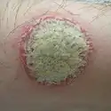
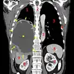

Wikipedia:Redaktion Medizin/Open Textbook of Medicine
Willkommen zur Offline-Medizin-Enzyklopädie von Wikipedia, einer umfangreichen Sammlung von Wikipedia-Artikeln zu den Themen Gesundheit, Hygiene, Anatomie und Arzneimittel, die für den Offline-Gebrauch optimiert ist. Genau wie in der Wikipedia sind die Inhalte frei verfügbar und können heruntergeladen, weiterverwendet, geteilt und ausgebaut werden.
Die App wird in vielen Sprachen angeboten. Dazu gehören Englisch, Persisch, Chinesisch und Hindi. Um diese Informationen in so vielen Sprachen wie möglich verfügbar zu machen, wird in Zusammenarbeit mit unter anderem Übersetzer ohne Grenzen an weiteren Übersetzungen gearbeitet. Wenn dir die App gefällt und du helfen möchtest, sie zu verbessern, melde dich bitte bei unserer Redaktion Medizin oder den App-Entwicklern.
Die Inhalte wurden durch Freiwillige verfasst und zusammengestellt. Obwohl sie so sorgfältig wie möglich gearbeitet haben und viele von ihnen selbst Mediziner sind, können sich Fehler eingeschlichen haben. Deshalb solltest du die Texte kritisch hinterfragen und im Zweifel Fachleute hinzuziehen. Bei ernsten Gesundheitsproblemen solltest du ärztlichen Rat einholen.
Dr. med. James Heilman
Die Teams des WikiProjekts Medizin &
Translators Without Borders
|
Arzneimittel Carbamazepin • Cefalexin • Choleraimpfstoff • Dapson • Diazepam • Empfängnisverhütung • Grippeimpfung • Hydrochlorothiazid • Ibuprofen • Ipratropiumbromid • Ketamin • Kokain • Levofloxacin • Masernimpfstoff • Metoprolol • Mifepriston • Morphin • Nystatin • Paracetamol (Acetaminophen) • Propofol • Salbutamol |
|
Augenheilkunde Amblyopie • Ametropie • Farbenfehlsichtigkeit • Glaukom • Katarakt • Keratoconjunctivitis sicca • Konjunktivitis • Makuladegeneration • Netzhautablösung • Trachom |
|
 |
Dermatologie Abszess • Akne • Allergie • Atopisches Ekzem • Dermatitis • Haarausfall • Herpes simplex • Herpes Zoster • Kandidose • Kopfläuse • Krätze • Masern • Mundwinkelrhagade • Schuppenflechte • Windpocken • Zellulitis |
|
 |
Onkologie Brustkrebs • Darmkrebs • Endometriumkarzinom • Glioblastom • Hautkrebs • Hirntumor • Krebs • Leukämie • Lungenkrebs • Magenkrebs • Malignes Lymphom • Malignes Melanom • Mesotheliom • Ovarialkarzinom • Pankreastumor • Prostatakrebs • Speiseröhrenkrebs • Zervixkarzinom |
|
Rheumatologie Arthrose • Fibromyalgie • Gicht • Hexenschuss • Ischialgie • Karpaltunnelsyndrom • Osteoporose • Plantarfasziitis • Rheumatoide Arthritis • Sarkoidose • Schuppenflechte |